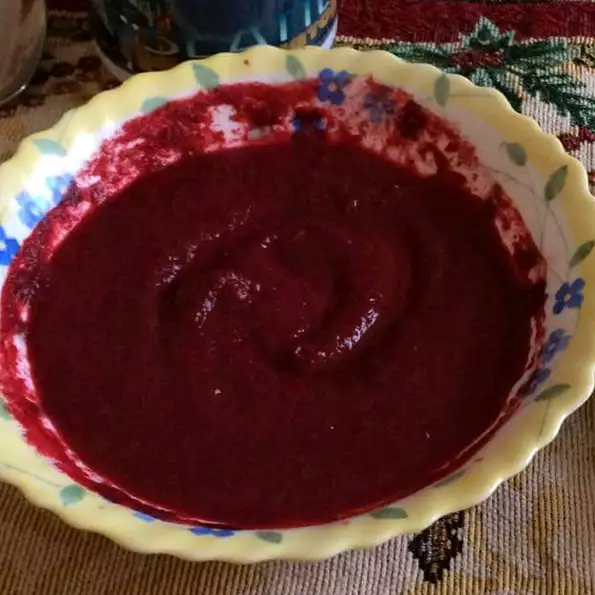

Vegan Borscht

Description
Odin's super secret vegan burritos from a distant secret planet called earth.
Ingredients
- 1 tablespoon olive oil
- 3 cloves garlic, minced
- 1 onion, chopped
- 3 tablespoons olive oil
- 2 stalks celery, chopped (Optional)
- 2 carrots, finely chopped
- 1 green bell pepper, chopped
- 3 beets, including greens, diced
- 1 (16 ounce) can whole peeled tomatoes
- ½ cup canned peeled and diced tomatoes
- 2 potatoes, quartered
- 1 cup shredded Swiss chard
- 2 cups vegetable broth
- 4 cups water
- 2 tablespoons dried dill weed
- salt and freshly ground black pepper to taste
- 1 (16 ounce) package silken tofu
Steps!
- Heat 1 tablespoon of olive oil in a skillet over medium heat.
- Stir in the garlic and onion; cook and stir until the onion has softened and turned translucent, about 5 minutes. Set aside.
- Heat the remaining 3 tablespoons of olive oil in a large pot over medium-high heat.
- Stir in the celery, carrots, bell pepper, beets including the greens, whole tomatoes, diced tomatoes, potatoes, Swiss chard, and the onion mixture.
- Cook and stir until the chard begins to wilt, 4 to 8 minutes. Stir in the vegetable broth, water, dill weed, and salt and pepper.
- Bring to a boil, and reduce heat to low. Simmer for 1 hour.
- Strain half the beets from the broth and place in a blender, filling the pitcher no more than halfway full.
- Hold down the lid of the blender with a folded kitchen towel, and carefully start the blender, using a few quick pulses to get the beets moving before leaving it on to puree.
- Add the tofu, and continue pureeing until smooth.
- Stir the tofu mixture back into the pot. Simmer until the mixture is reduced by a third, about another hour.
- Serve chilled or warm.
Previous Recipe
Back to main page